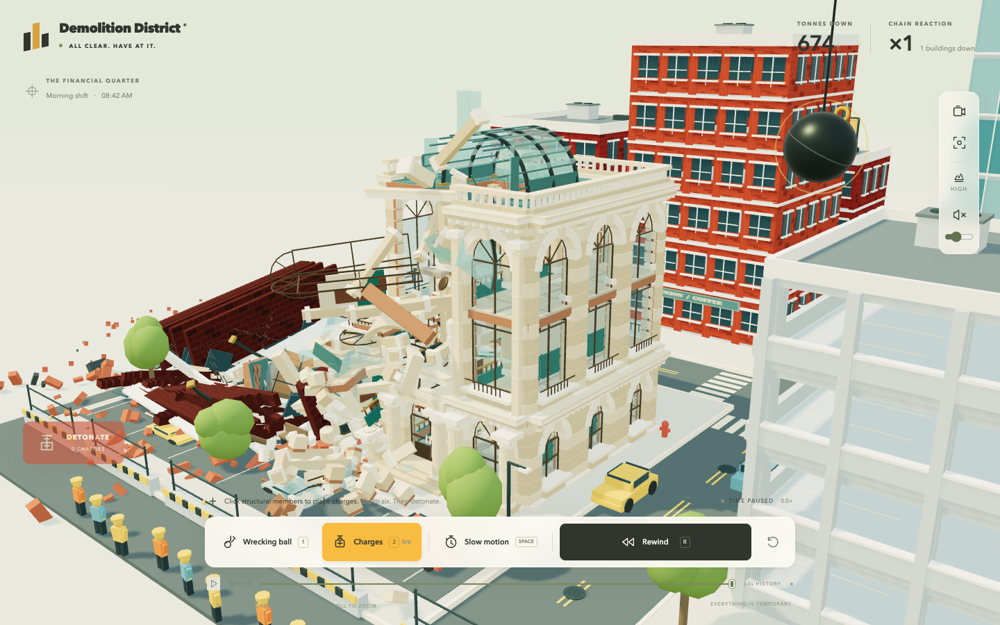
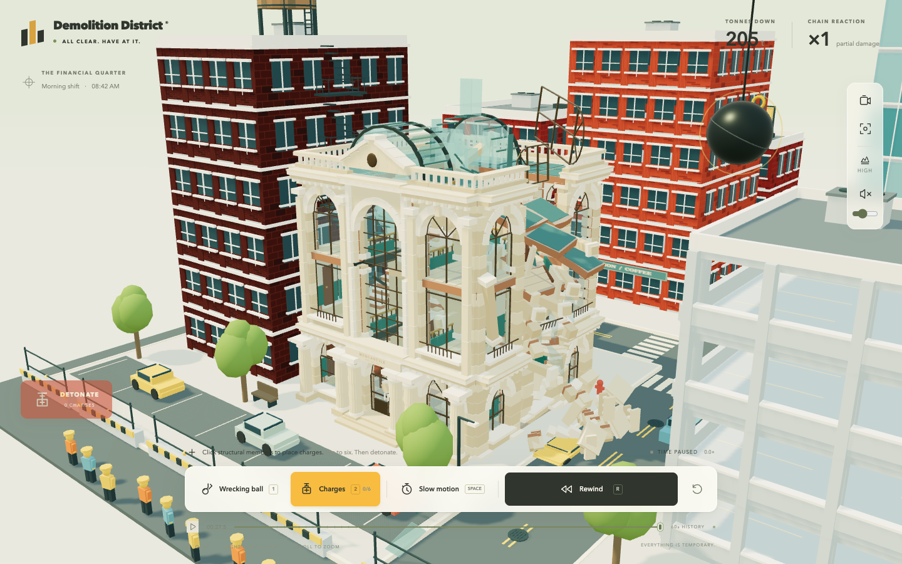
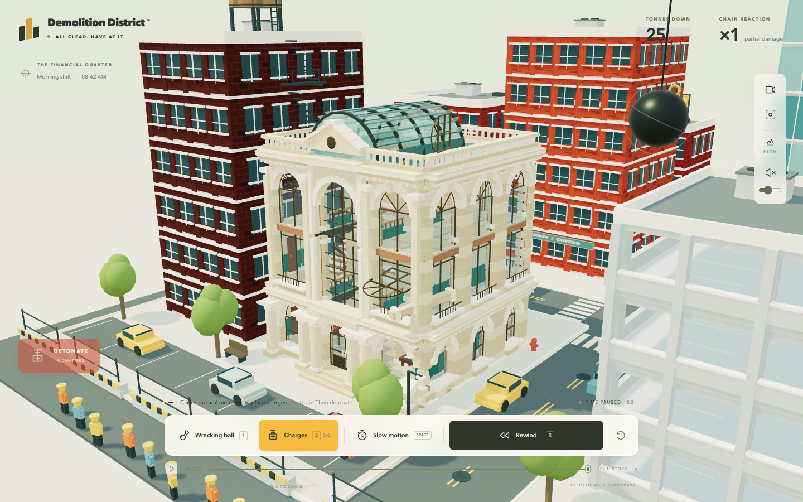
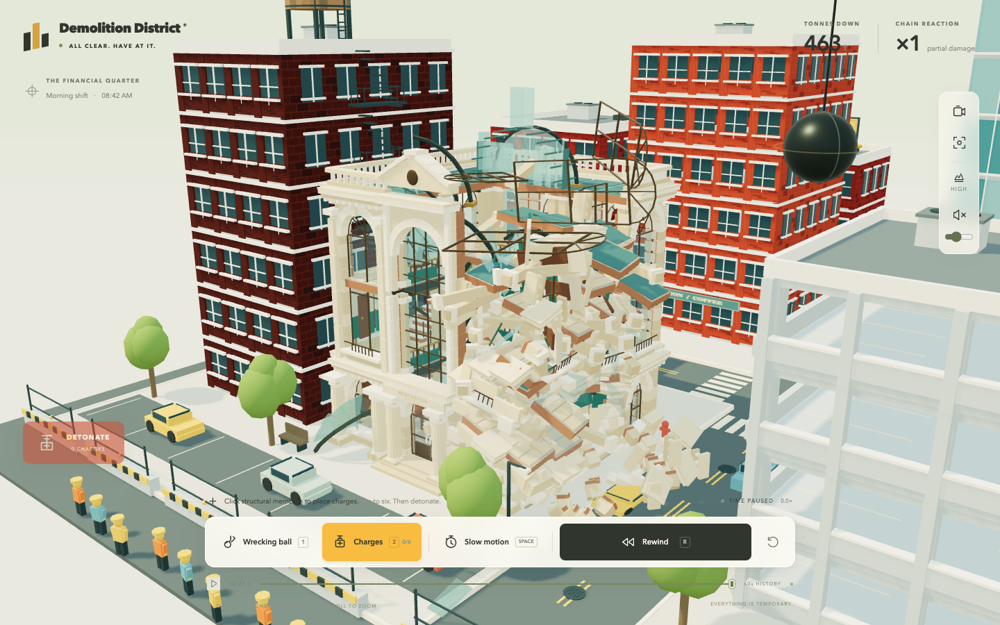
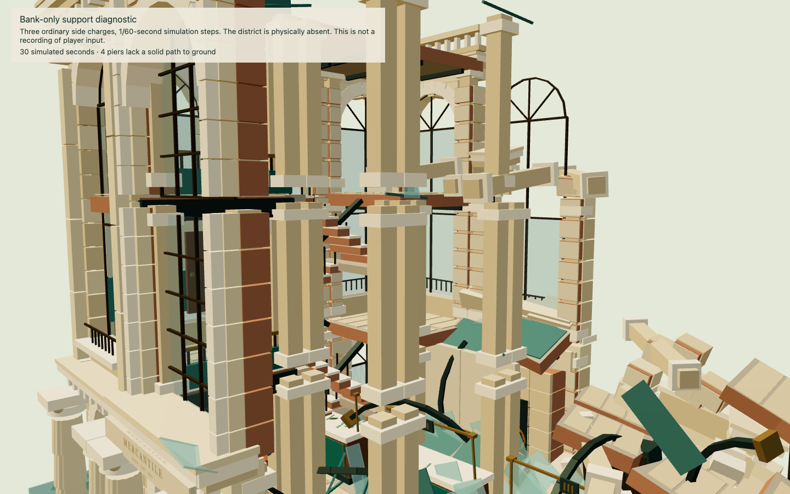
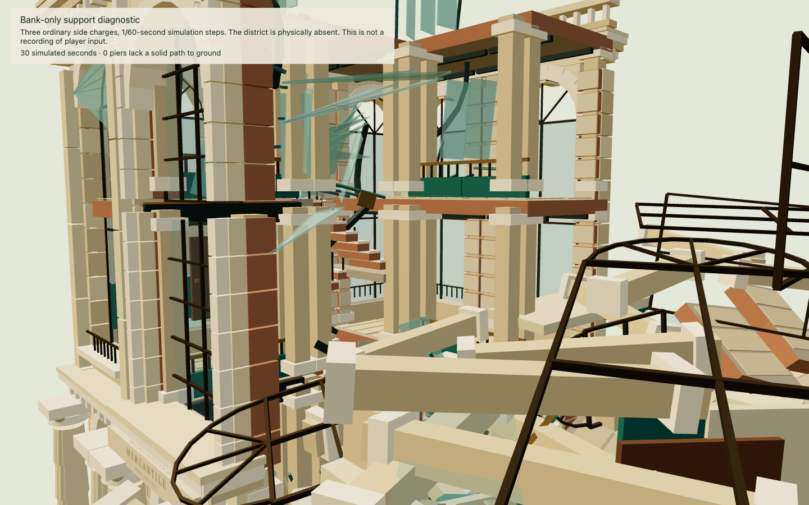

A local wound can hold while another cut changes the bank's fate. The front and side still fall in different directions. This is a draft candidate for owner review.




These are paused observations at the times recorded in the inspection evidence, with native replay between observations and later interventions. Waiting is not represented as an uninterrupted film.
The full district, effects, construction and retained rubble are present. A substantial collapse can bury the hall.


Both views use the actual bank recipe, three ordinary charge API calls and 30 simulated seconds at fixed steps; the district is absent. The corrected bank retains more construction, so this pair alone does not prove the same piers fell. A separate removal regression proves disconnected piers release. The owner's exact floating-pillar instance remains unidentified.
This recording includes explicit native slow motion and reverse as well as normal play. See the control evidence.
Review notes, causes, timing, exact inputs and limitations · Independent verification